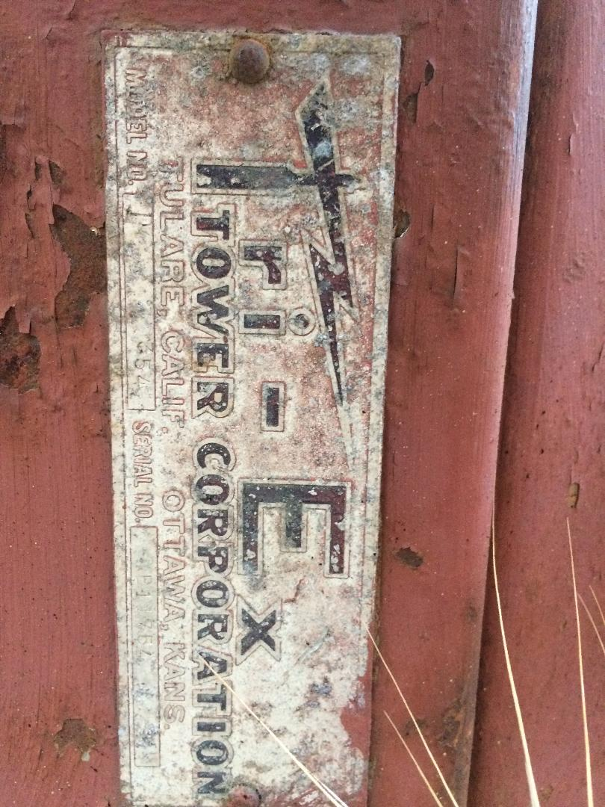

[Date Prev][Date Next][Thread Prev][Thread Next][Date Index][Thread Index]
[NCDXC Chat] Free 50ft crackup tower
I have, what I believe, is a Tashjian Tower (Tri-Ex) module WT-51. I have no base nor the lifting cable. It is currently looking for a future as a working tower else where. I am available during the weekday and weekends. If interested, drop me an email at my callsign at Yahoo.com
I have no means to transport or ship this tower.
73 n6nkt, George
Name plate on the tower: img above
Model No. WT-51PART NUMBER: 451‐00501TYPE: Self‐supporting, extendable, manual crank‐up tower.SPECIFICATIONS:TOWER HEIGHT: Extended 51’. Retracted 21’‐6”.TOWER SUPPORT: Self‐supporting, no guys.WIND LOADING: Engineering analysis indicates the tower will support12 square feet of projected area at the basic wind speed of 100MPH, 3 second gust per ANSI/TIA EIA RS 222 Rev. H.DEAD LOAD: The maximum dead load is 250 lbs.WEIGHT: The tower with the base weighs 355 pounds.SECTIONS: The tower is made from three each 20 foot sections,#4, #5, and #6 is the base
DESCRIPTION:Tower is complete with a manual crank‐up winch and hoistingcables, and a rigid concrete base mount. The tower is designedto extend the tower telescopic sections uniformly.
This tower has pulley frame on one face only. The lifting cableis 1/4 x 7 x 19 aircraft cable.
Because of high strength tubing and the bracing of solid rod,this design is considered to be the strongest engineeringconfiguration for towers, yet saves weight, resists torsion loadand reduces wind resistance, allowing more useful load to beInstalled on the tower.

{kind=link}